LLM Engineering Guide: 45 Concepts for Inference, Training, Architecture, and Operations
Production LLM systems pull from GPU hardware, systems engineering, and ML theory all at the same time. The same handful of concepts shows up whether you are tuning TTFT for a chatbot or configuring DeepSpeed ZeRO for a fine-tuning run. This guide collects them in one place.
TL;DR: 45 concepts in eight parts: hardware, inference fundamentals, inference optimizations, model architecture, training and alignment, scaling and deployment, applications, and production operations. Each entry has the definition, why it matters, the numbers, and links to the concepts it connects to. Data is from 2024 through early 2026, with sources.
This guide assumes familiarity with basic ML (backpropagation, gradient descent, softmax) and some systems knowledge (memory hierarchies, networking basics).
A note on scope
This is the biggest post on this blog by a wide margin. You don't have to read it cover to cover. Use the table below to jump straight to the parts that interest you.
| Part | Topics | Sections |
|---|---|---|
| I — Hardware Foundations | Roofline model, GPU memory, hardware glossary | 1–3 |
| II — Inference Fundamentals | Latency, throughput, KV cache, attention, quantization | 4–9 |
| III — Inference Optimizations | CUDA kernels, FlashAttention, batching, PagedAttention, speculative decoding | 10–17 |
| IV — Model Architecture | Transformer internals, decoder-only, MoE, tokenization, context windows | 18–22 |
| V — Training and Alignment | Pretraining, LoRA, mixed precision, ZeRO, scaling laws, RLHF/DPO/GRPO, distillation | 23–32 |
| VI — Scaling and Deployment | Parallelism, serving frameworks, GPU selection, routing | 33–36 |
| VII — Applications | Embeddings, RAG, agents, prompt engineering | 37–40 |
| VIII — Production Operations | Rate limiting, failure modes, monitoring, cost, capacity planning | 41–45 |
How to use this guide as a hub
This page is deliberately broad. Use it as the map, then jump to the deeper posts when the decision becomes concrete.
| If you are deciding... | Start with | Then read |
|---|---|---|
| How to serve a model | Inference fundamentals and deployment | LoRAX Serving Guide |
| Whether to fine-tune | Training and alignment | LLM Fine-Tuning Guide |
| How retrieval fits into an app | Embeddings and RAG | RAG Evaluation Metrics |
| How agent systems work | Agents and prompt engineering | AI Agent Reasoning Loops |
| How to rank search results | Embeddings and reranking | Search Ranking Stack |
The highest-return path is usually: understand the bottleneck, pick the smallest stack that exposes it, benchmark with the real workload, then add complexity only where the numbers justify it.
Part I — Hardware Foundations
The concepts here — arithmetic intensity, the GPU memory hierarchy, and the hardware terms — show up everywhere else in this guide.
1. Memory-Bound vs Compute-Bound and the Roofline Model
The starting point for LLM performance is arithmetic intensity: for every byte of data the GPU loads from memory, how many useful calculations does it perform? That ratio decides whether an operation is compute-bound (waiting on the processor) or memory-bound (waiting on data to load).
Every GPU has a "critical intensity" threshold where its compute capability exactly balances its memory bandwidth. For an NVIDIA H100 (Datasheet, 2023):
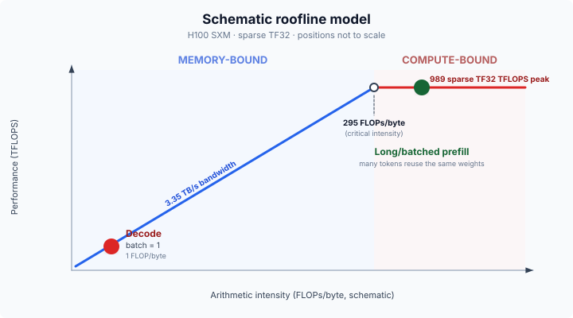
The two phases of LLM inference sit on opposite sides of this threshold:
- Decode is memory-bound. Generating tokens one by one means loading the entire multi-gigabyte weight matrix from memory to multiply it against a single new token. In 16-bit precision (2 bytes per parameter), that is exactly 1 FLOP/byte, almost 300x below the H100 threshold. The compute units sit idle more than 99% of the time waiting for memory.
- Prefill is compute-bound. Processing the input prompt loads weights once but multiplies them against hundreds or thousands of tokens at the same time. The intensity climbs well above 295 and saturates the compute units.
So to speed up decode, work on memory bandwidth: shrink the weights with quantization, reduce KV memory overhead with GQA and PagedAttention, and raise intensity with batching. To speed up prefill, work on raw computation: faster GPUs, FP8 compute.
2. GPU Memory Hierarchy
A GPU has four memory layers, arranged like a pyramid: a large but slow main memory (HBM) at the bottom, tiny but very fast registers at the top. Moving data up and down this pyramid is the main traffic jam. The hardest bottleneck sits between HBM and SRAM, where SRAM is roughly 10x faster.
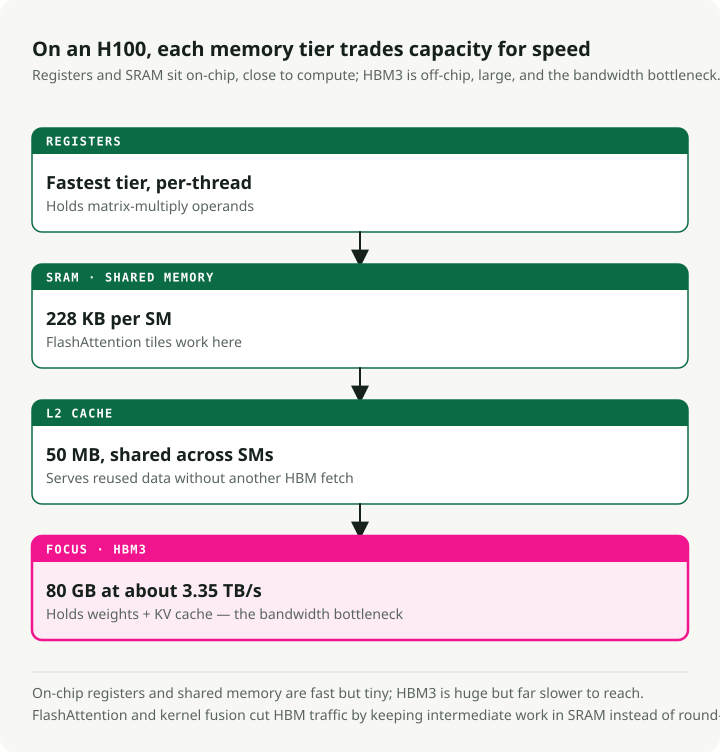
From fastest to slowest on an H100:
- Registers — the fastest memory, attached directly to the processing threads. This is where the math actually runs; data has to be loaded here for the Tensor Cores to use it.
- SRAM (Shared Memory) — the working memory at roughly 33 TB/s.
- L2 Cache — a middle layer (50 MB) at around 12 TB/s. It acts as a buffer so that when multiple SMs need the same weights, they do not all have to fetch from HBM.
- HBM3 — the 80 GB main memory holding model weights and KV cache, at ~3.35 TB/s.
Most of the software tricks in this guide (FlashAttention, kernel fusion, PagedAttention) exist to keep data up in SRAM as long as possible and avoid the 10x slower trip back to HBM.
3. GPU Hardware Glossary
The terms below show up throughout the rest of the guide.
HBM (High Bandwidth Memory) — Stacked DRAM dies connected via through-silicon vias (TSVs), mounted on-package next to the GPU die. Generations: HBM2e (A100, 2 TB/s), HBM3 (H100, 3.35 TB/s), HBM3e (H200/B200, 4.8–8 TB/s). Why it matters for LLMs: decode is memory-bandwidth-bound, so HBM bandwidth directly determines TPOT.
GDDR (Graphics DDR) — Traditional graphics memory (GDDR6, GDDR6X) used in consumer GPUs (RTX 4090, L40S). Lower bandwidth than HBM but cheaper per GB. GDDR6X on RTX 4090 delivers ~1 TB/s versus H100's 3.35 TB/s HBM3.
SM (Streaming Multiprocessor) — The basic compute building block of NVIDIA GPUs. Each SM contains CUDA cores, Tensor Cores, shared memory (SRAM), and a warp scheduler. H100 has 132 SMs; A100 has 108.
Tensor Cores — Specialized matrix-multiply-accumulate units inside each SM. They accelerate mixed-precision matmuls (FP16, BF16, FP8, INT8) that dominate transformer computation. H100 Tensor Cores deliver 989 TFLOPS in TF32 versus ~67 TFLOPS from CUDA cores alone.
CUDA Cores — General-purpose floating-point and integer units. They handle element-wise operations, activation functions, and non-matmul work. Tensor Cores handle the heavy lifting for LLMs; CUDA cores handle everything else.
Warp — A group of 32 threads that execute in lockstep on an SM. The smallest scheduling unit on NVIDIA GPUs. Warp specialization assigns different warps to different tasks (data loading vs computation) for pipelining.
NVLink — High-speed GPU-to-GPU interconnect within a node. NVLink 4.0 (H100) delivers 900 GB/s bidirectional; NVLink 5.0 (B200) reaches 1.8 TB/s. Essential for tensor parallelism where GPUs must exchange activations every layer.
InfiniBand — High-speed network fabric for inter-node GPU communication. NVIDIA ConnectX-7 delivers 400 Gb/s per port. Used for pipeline parallelism and distributed training across nodes.
RDMA (Remote Direct Memory Access) — Allows one GPU to read/write another machine's memory without involving the CPU, minimizing latency. GPUDirect RDMA enables direct GPU-to-GPU transfers across nodes. Used in disaggregated serving for KV cache transfers.
NVMe (Non-Volatile Memory Express) — High-speed SSD interface used for KV cache offloading and ZeRO-Infinity parameter offloading when GPU/CPU memory is insufficient. Sequential read speeds of 5–7 GB/s per drive (PCIe Gen 4), with newer Gen 5 drives reaching 10–14 GB/s.
TFLOPS / PFLOPS — Tera/Peta floating-point operations per second. 1 TFLOPS = 10¹² FLOPS. The standard unit for measuring GPU compute throughput. H100 delivers 989 TFLOPS (TF32); FlashAttention-3 achieves ~1.2 PFLOPS in FP8.
Part II — Inference Fundamentals
Inference is the part of the system that users actually feel. Latency, the KV cache, the two-phase execution model, attention, and quantization between them set how fast, how cheap, and how reliably you can serve.
4. Latency: TTFT, TPOT, and Percentiles
Time to First Token (TTFT) is the delay from request submission to the first output token. It is set by the prefill phase: the model has to process the whole prompt before generating anything, so longer prompts mean higher TTFT. Production targets range from <100 ms for code completion to <500 ms for chatbots. MLPerf Inference v5.0 sets P99 TTFT at \(\leq\) 450 ms for Llama 2 70B.
Time Per Output Token (TPOT) is the average interval between consecutive tokens after the first. It maps to the decode phase, where each step is memory-bandwidth-bound:
Average human silent reading speed is roughly 250 ms per word (~5 tokens/s) (Brysbaert, 2019), but systems target much faster rates so users never have to wait for text to appear. The threshold for smooth-feeling streaming is roughly 25 ms per token (~40 tokens/s). MLPerf sets P99 TPOT at \(\leq\) 40 ms for interactive workloads.
P50 vs P99 latency matters because the median hides the worst-case experience. P99 is the slowest 1% of requests, which is where user complaints and SLA violations live. A system with a good P50 and a bad P99 has a batching, preemption, or queue-depth problem.
5. Throughput: Tokens Per Second and the Latency Tradeoff
Throughput is measured in output tokens per second across all concurrent requests. Requests per second is a weaker metric because a 10-token response and a 1,000-token response have very different costs. Typical numbers: Llama 3.1 8B on a single H100 reaches 5,000–11,000 output tokens/s at high batch sizes (vLLM Benchmarks, 2024); Llama 3 70B FP8 on 4×H100 lands in the same ballpark across vLLM, SGLang, and TensorRT-LLM.
The tradeoff: at low concurrency, each request gets great latency but the GPU is underutilized. Increasing batch size raises throughput almost linearly until compute saturates, after which latency climbs sharply. Goodput, the fraction of requests that meet your SLO targets, is the metric that connects raw throughput to actual user satisfaction.
6. KV Cache: The Bottleneck Behind Most Other Bottlenecks
During autoregressive generation, each new token attends to every previous token. The KV cache stores the Key and Value projections from every token at every layer to avoid \(O(n^2)\) recomputation. Without it, generating token \(n\) would require re-running the model over all \(n-1\) previous tokens.
The KV cache is usually the dominant memory pressure because it grows linearly with sequence length, batch size, and layer count:
where:
- \(L\) = number of layers
- \(h_{kv}\) = number of KV heads
- \(d_h\) = head dimension
- \(s\) = sequence length
- \(B\) = batch size
Concrete examples with FP16 and batch size 1: Llama 3 8B at 8,192 tokens uses ~1.0 GB of KV cache; at 128K tokens, 16 GB. Llama 3 70B at 128K tokens needs ~40 GB for a single sequence, half of an H100's VRAM. At production batch sizes, KV cache easily exceeds model weight memory. Naive implementations waste 60–80% of the allocated KV memory to fragmentation, which is the problem PagedAttention was built to solve.
The main optimizations are GQA (fewer KV heads), KV cache quantization (FP8/INT8), PagedAttention (block-based allocation with <4% waste), and offloading KV cache to CPU or NVMe.
7. Prefill vs Decode: Two Phases, Two Bottlenecks
The prefill phase processes the entire input prompt in parallel and populates the KV cache. It is compute-bound: large matrix multiplications fully saturate the Tensor Cores, and this is what determines TTFT. The decode phase generates one token at a time, with each step reading the full model weights and KV cache from HBM to produce a single token. It is memory-bandwidth-bound: the compute units sit mostly idle waiting for data, and this determines TPOT.
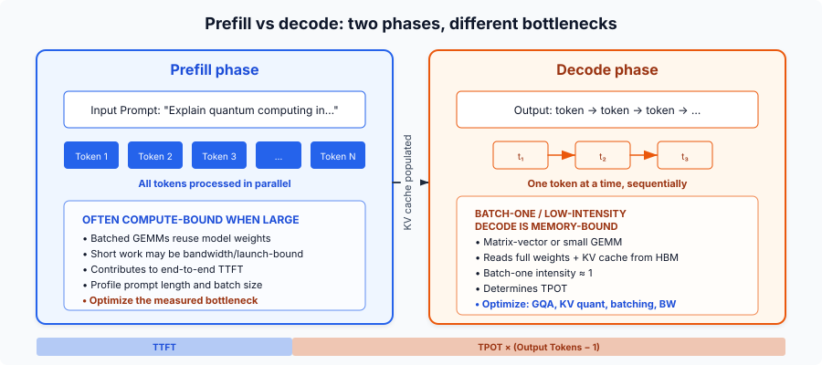
Chunked prefill splits the prompt into fixed-size chunks (for example, 512 tokens) instead of processing it all at once. A long prefill no longer blocks ongoing decode requests, compute-bound and memory-bound work get co-scheduled on the same GPU, and vLLM benchmarks show +50% throughput (Agrawal et al., 2024). The cost is slightly higher TTFT for the new request.
A newer pattern called disaggregated serving (introduced by Splitwise and DistServe, now used by Perplexity and NVIDIA Dynamo) physically separates prefill and decode onto different GPU pools, each optimized for its bottleneck. KV cache transfers between pools via RDMA.
8. GQA and MQA: Shrinking the KV Cache
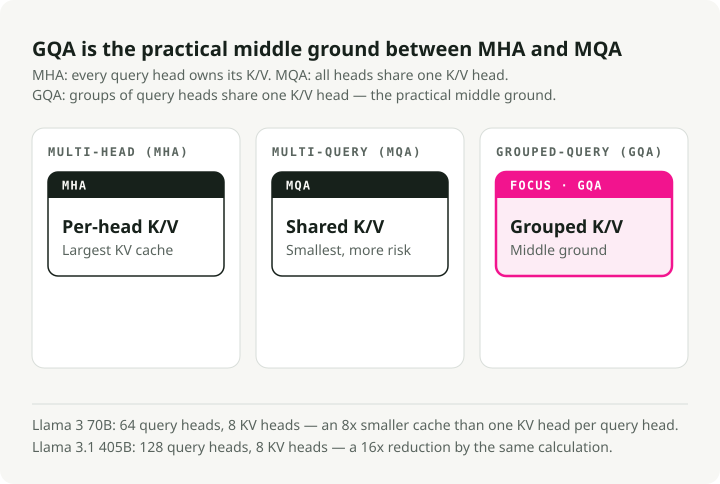
Standard Multi-Head Attention (MHA) gives every query head its own K and V head. Multi-Query Attention (MQA) shares a single KV head across all query heads, which is an extreme reduction. Grouped-Query Attention (GQA) is the practical middle ground: groups of query heads share one KV head.
Llama 3 70B uses 64 query heads but only 8 KV heads, an 8x KV cache reduction versus MHA. Llama 3.1 405B pushes this to 128 query heads with 8 KV heads for a 16x reduction (Meta, 2024). GQA keeps MHA-level quality (within ~1% on benchmarks) while approaching MQA-level speed (Ainslie et al., 2023). A smaller KV cache means larger batches, higher throughput, and lower decode latency per token.
9. Quantization: Trading Bits for Speed and Memory
Quantization reduces the precision of model weights and/or activations. The core tradeoffs:
| Format | Bits | Memory (7B model) | Quality Impact |
|---|---|---|---|
| FP16/BF16 | 16 | ~14 GB | Baseline |
| FP8 | 8 | ~7 GB | Essentially lossless on Hopper (H100) |
| INT8 | 8 | ~7 GB | 1-3% degradation with tuning |
| INT4 | 4 | ~3.5 GB | Stable for 70B+, risky for small models |
AWQ (Activation-Aware Weight Quantization) finds the <1% of salient weights by looking at activation magnitudes and applies per-channel scaling to protect them. It needs only 128–1,024 calibration tokens and won the MLSys 2024 Best Paper Award. GPTQ uses second-order Hessian information for layer-wise quantization, which is better on coding benchmarks but needs more calibration data. bitsandbytes (Tim Dettmers' library) quantizes on the fly during model loading with no preprocessing cost; its NF4 format powers QLoRA fine-tuning. FP8 on H100/H200 is becoming the production default: near-lossless with 2x memory reduction.
One thing worth flagging: the kernel often matters more than the quantization algorithm. The same quantized weights served through different kernels can show a 2.6x throughput difference purely from how well they use the GPU (Section 10).
Part III — Inference Optimizations
This part is about the software techniques that turn a working inference system into a fast one. Each one targets a specific bottleneck: FlashAttention exploits the SRAM-HBM gap, PagedAttention removes KV cache fragmentation, continuous batching keeps the GPU busy.
10. CUDA Kernels and Kernel Fusion
A CUDA kernel is a function written for the GPU that runs in parallel across thousands of threads. When the CPU calls a kernel, the GPU distributes the work across its SMs: each SM runs multiple warps of 32 threads, and each thread processes a slice of the data. Every operation in LLM inference, from matrix multiplication to token sampling, is ultimately a kernel launch. A single forward pass through a 70B model triggers hundreds to thousands of kernel launches, and the gap between a naive kernel and an optimized one can decide whether your system meets its latency SLO.
The main kernel categories in LLM serving:
- GEMM kernels for matrix multiplication, which dominate both prefill and decode compute.
- Attention kernels like FlashAttention that tile computations to stay in SRAM instead of spilling to HBM.
- Fused kernels that combine multiple operations (such as add + layer norm or QKV projection) into a single launch to skip the intermediate HBM round-trips.
- Sampling kernels that convert logits to token IDs via top-k, top-p, or temperature sampling.
Kernel quality often matters more than the quantization algorithm. The same INT4-quantized weights served through Marlin (an optimized FP16xINT4 kernel) hit 712 tokens/s versus vanilla GPTQ's 276 tokens/s, a 2.6x throughput difference purely from better GPU utilization. Marlin gets there through asynchronous memory fetching and shared memory queues that keep Tensor Cores fed instead of waiting on HBM. Triton lowers the barrier to writing custom kernels by exposing GPU programming through Python rather than raw CUDA C++, which makes kernel-level optimization accessible to ML engineers rather than only GPU specialists. Most of the optimizations later in this part (FlashAttention, fused kernels, PagedAttention) are at heart either better kernels or smarter ways to orchestrate kernel launches.
Kernel fusion combines several sequential operations into a single GPU kernel and skips the intermediate HBM writes. Common fusions: QKV projection (one matmul instead of three), attention + softmax (FlashAttention itself), add + RMSNorm (FlashNorm), and SwiGLU activation (DeepFusionKernel). Triton makes it practical to write these fused kernels in Python. Without fusion, a 70B model has thousands of kernel launches per token at ~30% GPU utilization. With fusion, layers reduce to 1–2 optimized kernels at 80–90% utilization.
11. FlashAttention: Tiling Attention to Live in SRAM
Standard attention materializes the full \(N \times N\) attention matrix in HBM, which costs \(O(N^2)\) memory and produces a lot of memory traffic. The idea behind FlashAttention is to never materialize this matrix at all. It tiles the Q, K, V matrices into blocks that fit in SRAM, computes partial attention within each tile, and merges results using an online softmax (incrementally tracking the running max and sum across blocks). Memory drops from \(O(N^2)\) to \(O(N)\), and HBM reads drop by an order of magnitude.
Each version targets the bottleneck of its GPU generation:
- FlashAttention v1 (A100, 2022) proved the tiling plus online-softmax idea works. A 2–4x speedup over standard attention, but only 25–40% GPU utilization because kernel scheduling left many SMs idle.
- FlashAttention v2 (A100, 2023) reworked the parallelism to split across the sequence dimension rather than batch and heads. It reached 50–73% utilization on A100, roughly 2x faster than v1.
- FlashAttention v3 (H100 Hopper, 2024) added warp specialization (separate warps for data movement vs. math) and GEMM-softmax pipelining to overlap memory loads with computation. 75–85% utilization on H100 and up to ~1.2 PFLOPS in FP8. NeurIPS 2024 spotlight.
- FlashAttention v4 (B200 Blackwell, 2026) addresses a new bottleneck: on Blackwell, tensor core throughput scales so fast that non-matmul operations (softmax exponentials, rescaling) become the limiter. FA4 software-emulates the exponential with polynomial approximations on FMA units, uses conditional rescaling to reduce overhead, and stores intermediates in Blackwell's dedicated tensor memory (TMEM) instead of registers. The result: 1,605 TFLOPS/s on B200 in BF16, 1.3x faster than cuDNN 9.13 and 2.7x faster than Triton.
Each generation hit a different hardware wall, and each FlashAttention version was redesigned from the kernel up to address it.
12. FlashDecoding: Parallelizing the Decode Bottleneck
Standard FlashAttention keeps the GPU busy by splitting work across batch size and query length. During decode the model generates exactly 1 token at a time (query length = 1). If the batch size times the number of attention heads is less than the GPU's total SM count (108 on an A100), most of the GPU sits idle while a few units grind sequentially through the token history.
FlashDecoding solves this by adding a new parallelization dimension: the KV sequence length itself. It chops the KV cache into smaller chunks and distributes them across all the otherwise-idle GPU processors to evaluate in parallel, then merges their partial computations with a log-sum-exp reduction.
The result is up to an 8x end-to-end decode speedup on long sequences (64K context) and roughly constant decode time per token. Generating token 60,000 stays almost as fast as generating token 100.
13. Continuous Batching vs Static Batching
Static batching waits for every sequence in a batch to finish before starting the next, so short sequences waste GPU cycles idling after they hit end-of-sequence. Continuous batching (introduced by the Orca paper, OSDI 2022) operates at iteration-level granularity: at each decode step, completed sequences are removed and new ones inserted.
The numbers are large. Anyscale's benchmarks on OPT-13B show optimized static batching at 4x over naive, continuous batching at 8x, and vLLM with continuous batching + PagedAttention at 23x over naive (Anyscale, 2023). The catch is that continuous batching amplifies KV cache fragmentation. More concurrent sequences mean more scattered memory allocations, which is the exact problem PagedAttention was built to solve.
14. PagedAttention: Virtual Memory for KV Cache
vLLM's PagedAttention applies the OS virtual-memory idea to KV cache management. The KV cache is split into fixed-size blocks (typically 16 tokens), blocks are allocated on demand as tokens are generated, and logical (sequential) positions map to physical (scattered) memory locations through block tables. Multiple requests that share a prefix (system prompts, beam search) can point to the same physical blocks.
Earlier systems wasted 60–80% of KV cache memory to fragmentation and pre-allocation. PagedAttention drops that to <4%, which lets throughput rise 2–4x at the same latency and up to 24x over HuggingFace Transformers (vLLM Blog, 2023).
15. Speculative Decoding: Multiple Tokens Per Forward Pass
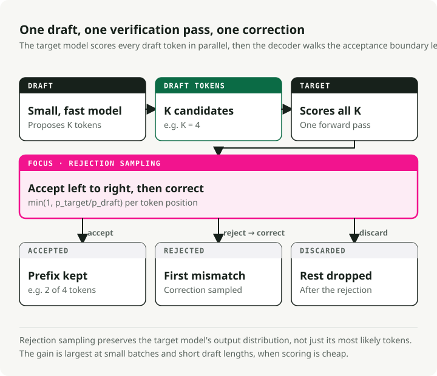
A small draft model generates \(K\) candidate tokens, then the large target model verifies all \(K\) tokens in a single forward pass. Correct tokens are accepted; the first incorrect one is rejected. Output quality is mathematically identical to the target model alone, so this is a lossless speedup.
It works because LLM decode is memory-bandwidth-bound: verifying \(K\) tokens costs about the same as generating 1, since both load all model weights once. Typical speedups land between 1.5x and 3x, with methods like EAGLE-3 reaching up to 6.5x. Variants include Medusa (extra prediction heads, no separate model), prompt lookup decoding (n-gram matching against the input, free), and EAGLE (feature-level extrapolation).
The catch is concurrency: at high batch sizes, the extra draft and verification compute can cause a 1.4–1.8x slowdown. Speculative decoding helps most at low batch sizes and on tasks where draft acceptance is high (summarization, QA).
16. Prefix Caching and KV Cache Reuse
Instead of throwing away the KV cache when a request finishes, prefix caching keeps it around for reuse on new requests that share the same prefix tokens. That cuts redundant prefill for system prompts, few-shot examples, RAG context, and multi-turn conversation history.
vLLM's Automatic Prefix Caching hashes each KV block and uses a global hash table for lookup, with cache hit rates of 87%+ on well-structured prompts. SGLang's RadixAttention maintains a radix tree of all cached KV tensors with token-level granularity and automatic detection of caching opportunities, reaching up to 5x throughput improvement.
17. Streaming in Practice
Streaming sends tokens to the client as they are generated instead of waiting for the full response. Most serving frameworks expose it via Server-Sent Events: the client opens a long-lived HTTP connection, and the server pushes each token (or a small token batch) as a data: event. TTFT determines when the user first sees output; TPOT determines how smooth it feels. Target: TPOT < 25 ms for smooth streaming (~40 tokens/s).
On the client side, streaming forces buffering decisions. Rendering token by token can cause visual jitter, especially with markdown or code blocks that need multi-token context to format correctly. Common patterns are word-level buffering (accumulate tokens until a whitespace boundary), line-level buffering (wait for a newline before rendering), and adaptive buffering (render immediately for prose, buffer for code blocks). The stream_options: {"include_usage": true} parameter in OpenAI-compatible APIs returns token counts in the final SSE event, which makes accurate cost tracking possible for streamed responses.
Chunked prefill is what makes streaming hold up under load. Without it, a single long prefill can stall token delivery for every other concurrent user.
Part IV — Model Architecture
How LLMs are built: the transformer block, tokenization, context handling, and the architectural variants that became the default. These underpin both inference and training.
18. Transformer Architecture Essentials
A modern decoder-only transformer (GPT, Llama) is a stack of identical layers, each with two sub-blocks: attention and feed-forward. Every sub-block is wrapped with a residual connection and normalization. The key components:
Multi-Head Attention — the mechanism that lets each token look at every other token to decide what is relevant. The input is projected into three matrices: Queries (what am I looking for?), Keys (what do I contain?), and Values (what information do I carry?). Attention scores are then computed as:
The \(QK^T\) dot product measures similarity between every pair of tokens. Dividing by \(\sqrt{d_k}\) keeps the dot products from growing too large (which would push softmax into regions with vanishing gradients). The softmax converts scores to probabilities, and multiplication by \(V\) produces a weighted combination of value vectors. Running this across multiple heads in parallel lets the model attend to different relationships at the same time (one head for syntax, another for coreference, and so on).
Feed-Forward Network (FFN) — once attention has decided which tokens are relevant, the FFN decides what to do with that information. Modern LLMs use SwiGLU instead of the original two-matrix ReLU FFN:
SwiGLU uses three weight matrices instead of two and a smooth Swish activation instead of ReLU. That adds about 50% more parameters to the FFN but improves quality enough that every major model family (Llama, Mistral, Qwen, Gemma) has adopted it. The FFN typically accounts for about two-thirds of total model parameters.
Residual Connections — each sub-block adds its output back to its input: \(\text{Output} = \text{Input} + \text{Sublayer}(\text{Input})\). Without this skip connection, gradients vanish when backpropagating through 80–128 layers. The residual creates a path that lets information and gradients flow directly from early layers to late ones.
RMSNorm — has replaced LayerNorm in essentially all modern LLMs. LayerNorm normalizes by re-centering (subtracting the mean) and re-scaling (dividing by standard deviation). RMSNorm skips the mean subtraction and only re-scales, which halves the learned parameters and is 7–64% faster with no quality loss. Pre-norm placement (normalizing before attention/FFN rather than after) is now standard because it gives more stable gradients without careful learning rate warmup.
Parameter count estimation for a decoder-only model:
where \(V\) = vocabulary size, \(d\) = hidden dimension, \(L\) = layer count. The \(V \times d\) term is the embedding matrix; the \(12 \times d^2\) per layer covers attention projections (Q, K, V, output = \(4d^2\)) and the SwiGLU FFN (\(8d^2\) with the typical \(\frac{8}{3}d\) intermediate size). For Llama 3 8B (\(V\)=128,256, \(d\)=4,096, \(L\)=32): \(128{,}256 \times 4{,}096 + 12 \times 32 \times 4{,}096^2 \approx 7.0B + 0.5B \approx 7.5B\) parameters (actual: 8.03B with tied embeddings and GQA adjustments).
19. Why Decoder-Only Architectures Dominate
The original Transformer (2017) had both an encoder and a decoder. Since then, the field split into three architectural families, and one became the default for generative AI.
Encoder-only models (BERT, RoBERTa) use bidirectional attention: every token attends to every other token in both directions. That produces rich representations for understanding tasks (classification, NER, semantic similarity) but cannot generate text autoregressively. Encoder-only models still dominate as the backbone for embedding models, rerankers, and lightweight classifiers (for example, the BERT-based routers in RouteLLM).
Encoder-decoder models (T5, BART, the original Transformer) separate understanding from generation. The encoder processes the full input with bidirectional attention, then the decoder generates output autoregressively while attending to the encoder's representations through cross-attention. This had a natural advantage for sequence-to-sequence tasks like translation, where input and output are fundamentally different sequences. Google's T5 showed that any NLP task could be framed as text-to-text, and encoder-decoder models still power some specialized systems (Whisper for speech recognition, FLAN-T5 for instruction following).
Decoder-only models (GPT, Llama, Mistral, Gemini) use causal (unidirectional) attention: each token attends only to previous tokens. They frame everything as next-token prediction: the "input" is the beginning of the sequence, and the "output" is its continuation. Four reasons this architecture took over:
-
KV cache efficiency. The KV cache from previous tokens stays valid as new tokens are generated, so you never discard or recompute it. Encoder-decoder models have to maintain two separate attention caches (self-attention plus cross-attention over the encoder output), which adds memory overhead and architectural complexity.
-
Training simplicity. The training objective is plain next-token prediction on raw text. No paired input-output data (as translation models need) or masked-token reconstruction (as BERT needs). You can train on essentially any text from the internet, books, and code with no special preprocessing, which is a huge advantage when scaling data to trillions of tokens.
-
Architectural simplicity. One module handles everything: the same transformer block, repeated \(L\) times. No encoder-decoder cross-attention layers, no separate encoder stack. This makes parallelism strategies more straightforward (Section 33), and shrinks the engineering surface for optimization. FlashAttention, quantization, and speculative decoding only have to target one attention pattern.
-
In-context learning. Decoder-only models are naturally good at few-shot learning because examples, instructions, and the query are all just tokens in the same sequence. The model does not distinguish "input" from "output"; it predicts the next token given everything before it. GPT-3 first demonstrated this at scale, and it made decoder-only models a strong fit for the general-purpose assistant role.
20. Mixture of Experts
MoE replaces the dense FFN in each transformer layer with multiple smaller expert FFNs plus a lightweight gating router. The router computes a score for each expert (typically a softmax over learned linear projections) and selects the top-\(k\) experts per token. Only the activated experts compute, so a model can have enormous total capacity while keeping per-token cost low. This is sparse conditional computation: total parameters set what the model can represent, active parameters set what it costs to run.
| Model | Total Params | Active Params | Experts (Routed + Shared) | Top-\(k\) |
|---|---|---|---|---|
| Mixtral 8x7B | 47B | ~13B | 8 + 0 | 2 |
| DeepSeek-V3 | 671B | 37B | 256 + 1 | 8 |
The shared expert in DeepSeek-V3 is always activated for every token. It provides a baseline representation that the routed experts can specialize on top of.
Training MoE has its own pain points. Load balancing: tokens cluster on a few popular experts and the rest are undertrained. Expert collapse: experts converge to identical representations, which negates the point of having multiple experts. And communication overhead for Expert Parallelism. Traditional MoE models add an auxiliary loss to penalize imbalanced routing, but that loss competes with the main training objective and degrades quality. DeepSeek-V3 handled this with auxiliary-loss-free bias terms: each expert has a bias added to its gating score, adjusted dynamically outside of backpropagation, decreased for overloaded experts and increased for underloaded ones. The result is balanced routing with no quality tradeoff.
21. Tokenization: BPE, SentencePiece, and tiktoken
LLMs do not see text. They see sequences of integer token IDs. A tokenizer splits raw text into tokens (subword pieces) and maps each to an ID. The tokenizer choice affects model quality, inference speed, and multilingual fairness.
Byte Pair Encoding (BPE) is the common algorithm. It iteratively merges the most frequent adjacent pairs in the training corpus. A simplified example:
- Start with character-level vocabulary:
[l, o, w, e, r, _] - Most frequent pair is
(l, o)→ merge intolo→ vocabulary:[l, o, w, e, r, _, lo] - Next most frequent pair is
(lo, w)→ merge intolow→ vocabulary addslow - Continue until the vocabulary reaches the target size (e.g., 128K tokens)
Common words like "the" become single tokens, while rare words like "defenestration" get split into subword pieces like ["def", "en", "est", "ration"]. The trade is vocabulary size against sequence length.
Three tokenizer implementations cover most production use:
- SentencePiece treats input as a raw byte stream with no language-specific preprocessing (no pre-tokenization by spaces or punctuation), which makes it language-agnostic and matters a lot for non-Latin scripts. Supports both BPE and unigram. Used by Llama 1/2, T5, and Mistral.
- tiktoken is OpenAI's Rust-based tokenizer using byte-level BPE. Its compiled Rust core is 3–6x faster than Python-based alternatives. Llama 3 switched from SentencePiece to tiktoken's algorithm.
- HuggingFace Tokenizers is the Rust-based library supporting BPE, WordPiece, and Unigram. It is the de facto standard for open-source model distribution.
Vocabulary sizes have grown steadily, with major implications for efficiency:
| Model | Vocab Size | English Fertility | Why It Matters |
|---|---|---|---|
| GPT-2 | 50,257 | ~1.3 tokens/word | Original BPE baseline |
| Llama 2 | 32,000 | ~1.4 tokens/word | Smaller vocab, longer sequences |
| GPT-4 | 100,256 | ~1.1 tokens/word | Better compression, fewer tokens per request |
| Llama 3 | 128,256 | ~1.0 tokens/word | 4x larger than Llama 2, major multilingual gain |
| GPT-4o | 200,000 | ~1.0 tokens/word | Largest production vocabulary |
Fertility (tokens per word) measures compression efficiency. Lower is better: fewer tokens means shorter sequences, lower cost, and more content fits in the context window. English typically lands at ~1.0–1.3 tokens/word, but non-Latin scripts (Chinese, Japanese, Korean, Arabic) can be 2–4x higher with English-centric vocabularies. The same content costs 2–4x more in tokens for non-English users, which is a persistent equity issue that larger, more balanced vocabularies only partly address.
22. Context Windows and Positional Encodings
The context window is the maximum number of tokens a model can process in a single forward pass. It has grown a lot:
| Model | Context Window | Year |
|---|---|---|
| Original Transformer | 512 | 2017 |
| GPT-4 Turbo | 128K | 2023 |
| Claude 3.5 | 200K | 2024 |
| Gemini 1.5 Pro | 1M+ | 2024 |
| Grok 4 Fast | 2M | 2025 |
There is a basic problem here: the attention mechanism treats its input as a set, not a sequence. It has no built-in notion of word order. Without positional information, "the cat sat on the mat" and "the mat sat on the cat" would produce identical representations. Positional encodings inject order so the model knows where each token sits.
Three approaches dominate:
-
RoPE (Rotary Position Embeddings) encodes each token's position by rotating its query and key vectors by an angle proportional to the position. Tokens close together get similar rotations, so their dot product (attention score) stays high. Tokens far apart get very different rotations, which encodes relative distance. RoPE is the standard for almost all modern open LLMs (Llama, Mistral, Qwen) because it handles relative positions well and is computationally cheap.
-
ALiBi (Attention with Linear Biases) skips embedding modifications and adds a penalty directly to attention scores: the farther apart two tokens are, the larger the negative bias. No learned parameters, no extra computation. It allows some extrapolation beyond training length but degrades noticeably at 2x+ the training context.
-
YaRN (Yet another RoPE extensioN) is the current best option for stretching a model's context window beyond what it was trained on. It groups RoPE's frequency dimensions into three categories (high-frequency: don't scale; low-frequency: scale linearly; mid-frequency: interpolate) and applies different scaling to each. The result: context extension with 10x fewer fine-tuning tokens and 2.5x fewer training steps than naive position interpolation.
Part V — Training and Alignment
Training is where capabilities are built. This part covers pretraining, efficient fine-tuning (LoRA, mixed precision), scaling laws, and alignment methods.
23. Pretraining, Fine-Tuning, and Alignment
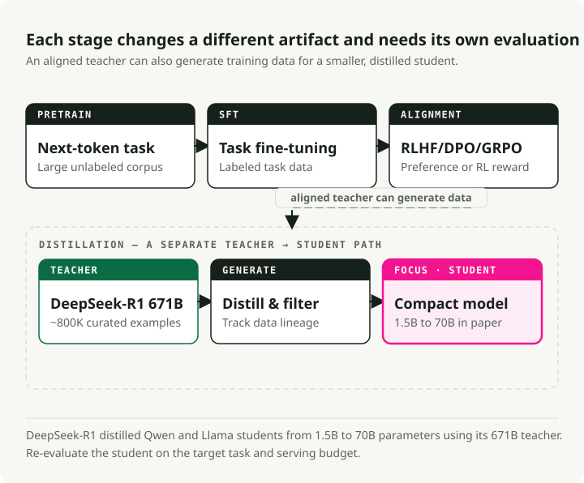
Pretraining is self-supervised next-token prediction on trillions of tokens. It builds general language understanding and costs $500K to $100M+: Llama 3 405B used \(3.8 \times 10^{25}\) FLOPs. Supervised fine-tuning (SFT) adapts the pretrained model to specific tasks with labeled data, in the hundreds to low thousands of dollars on a single GPU. RLHF / RLAIF teaches subjective qualities like helpfulness through preference learning: collect human comparisons, train a reward model, then fine-tune with RL (typically PPO or DPO). RLAIF replaces human annotators with AI feedback (Constitutional AI).
Compute spans roughly six orders of magnitude: pretraining at \(10^{24}\)–\(10^{26}\) FLOPs, SFT at \(10^{18}\)–\(10^{21}\), RLHF similar to SFT but with 4 model copies in memory for PPO. I covered the full fine-tuning decision framework (when to fine-tune vs. use RAG vs. prompt engineering) in LLM Fine-Tuning Guide.
24. LoRA and QLoRA: Parameter-Efficient Fine-Tuning
LoRA freezes the pretrained weights and injects trainable low-rank matrices \(A\) (\(r \times k\)) and \(B\) (\(d \times r\)) so that the updated weight is \(W_0 + BA\). The insight is that weight updates during fine-tuning have low intrinsic rank. That cuts trainable parameters by 10,000x (GPT-3 175B drops from 175B to ~18M) and GPU memory by ~3x. Typical ranks: \(r\)=8–16 for simple tasks, \(r\)=64–128 for complex scenarios. LoRA adapters can be merged post-training for zero inference overhead.
QLoRA loads the base model in 4-bit NF4 quantization while training LoRA adapters in BF16. NormalFloat4 places more quantization levels near zero, where weight density is highest. QLoRA fine-tunes a 65B model on a single 48GB GPU with performance barely distinguishable from 16-bit full fine-tuning. The tradeoff is 39% longer training time for 33% GPU memory savings versus standard LoRA.
25. Mixed Precision Training
Every floating-point format allocates its bits across three fields: sign (always 1 bit), exponent (sets the dynamic range), and mantissa (sets the precision). More exponent bits mean a wider range of representable magnitudes; more mantissa bits mean finer distinctions between nearby values. Integer formats have no exponent at all and represent only evenly spaced whole numbers within a fixed range.
| Format | Bits | Layout (S / E / M) | Range | Precision | Best For |
|---|---|---|---|---|---|
| FP32 | 32 | 1 / 8 / 23 | \(\pm 3.4 \times 10^{38}\) | ~7 decimal digits | Master weights, optimizer states (Adam momentum & variance) |
| BF16 | 16 | 1 / 8 / 7 | \(\pm 3.4 \times 10^{38}\) | ~2 decimal digits | Preferred training format — same range as FP32, no loss scaling needed |
| FP16 | 16 | 1 / 5 / 10 | \(\pm 65{,}504\) | ~3 decimal digits | Training with loss scaling (older GPUs); inference on pre-Hopper hardware |
| FP8 E4M3 | 8 | 1 / 4 / 3 | \(\pm 448\) | ~1 decimal digit | Forward pass on Hopper (H100) — more precision for weights & activations |
| FP8 E5M2 | 8 | 1 / 5 / 2 | \(\pm 57{,}344\) | ~0.6 decimal digits | Backward pass on Hopper — wider range for gradients |
| INT8 | 8 | fixed-point | \(-128\) to \(127\) | Exact integers | Post-training weight quantization for inference (W8A8); KV cache quantization |
| INT4 | 4 | fixed-point | \(-8\) to \(7\) | Exact integers | Aggressive weight-only quantization (AWQ, GPTQ) for inference on memory-constrained hardware |
BF16 has the same range as FP32 because range is set by the exponent field, and BF16 keeps all 8 exponent bits from FP32. It gives up mantissa bits instead (7 vs 23), trading precision for a 2x memory reduction while avoiding the overflow and underflow problems that plague FP16 training. FP16 has only 5 exponent bits, capping its range at ~65K. Gradients routinely exceed that, which is why FP16 training needs loss scaling: multiply the loss by a large constant before backprop, then divide gradients afterward. BF16 makes loss scaling unnecessary.
Integer formats are absent from training because integer quantization has no dynamic range and cannot represent the wide spread of gradient magnitudes during backpropagation. They work well for inference, where weights are frozen and can be mapped to a fixed range. INT4 quantization (via AWQ or GPTQ) cuts a 7B model from ~14 GB to ~3.5 GB, which is enough to run on consumer GPUs with only minor quality loss.
FP8 training on H100 via Transformer Engine uses E4M3 for the forward pass (more mantissa bits, better precision for activations) and E5M2 for the backward pass (more exponent bits, wider range for gradients), and delivers up to 75% faster wall-clock time on 175B models. DeepSeek-V3 trained entirely with FP8 mixed precision at about $5.6M, which is the marginal compute cost of the final training run, not counting R&D and infrastructure.
26. Gradient Checkpointing
Each layer of the forward pass produces an intermediate output called an activation:
Normally all activations have to stay in memory because backpropagation needs them to compute gradients. For a deep transformer, the stored activations can take more memory than the model weights themselves.
Gradient checkpointing trades compute for memory by throwing most of those activations away and recomputing them on the fly during backprop. The standard strategy (Chen et al., 2016) divides a network of \(n\) layers into \(\sqrt{n}\) evenly spaced segments and saves only the boundary activation of each segment. Those saved boundaries are the "checkpoints." All intermediate activations within a segment are dropped immediately.
When the backward pass reaches a layer inside a segment, its activations are recomputed from the nearest checkpoint. This drops activation memory from \(O(n)\) to \(O(\sqrt{n})\), which is a 60–70% reduction in practice, at a cost of roughly one extra forward pass (~20–33% more compute). FlashAttention applies the same principle inside attention by not materializing the full attention matrix. Enable it in HuggingFace with gradient_checkpointing=True.
27. DeepSpeed ZeRO Stages
In standard data parallelism, every GPU holds a complete copy of the model weights, gradients, and optimizer states. For Adam, each parameter takes 2 bytes for the FP16 weight + 4 bytes for the FP32 master weight + 4 bytes for momentum + 4 bytes for variance + 2 bytes for the gradient, which is 16 bytes per parameter. A 7.5B-parameter model needs ~120 GB per GPU, and every GPU stores the same thing. On 64 GPUs that is 64 identical 120 GB copies. A lot of waste.
DeepSpeed ZeRO (Zero Redundancy Optimizer) removes this duplication by sharding these components across GPUs instead of replicating them:
- Stage 1 — partition optimizer states. Each GPU stores only 1/N of the optimizer states (Adam's momentum and variance, 8 bytes/param). When a GPU needs to update a weight, it updates only its slice and broadcasts the result. Memory drops from ~120 GB to ~31 GB per GPU.
- Stage 2 — also partition gradients. Gradients (2 bytes/param) are no longer all-reduced to every GPU. Each GPU receives only the gradient slice it needs via reduce-scatter. Memory drops to ~16 GB per GPU.
- Stage 3 — also partition the model weights. Each GPU holds only 1/N of the FP16 weights. Before each layer's forward or backward pass, the GPU calls all-gather to temporarily reconstruct the full layer weights from all other GPUs, computes, and discards the gathered weights. Memory drops to ~1.9 GB per GPU.
| Config | Optimizer States | Gradients | Weights | Per-GPU Memory (7.5B) |
|---|---|---|---|---|
| No ZeRO | Replicated | Replicated | Replicated | ~120 GB |
| Stage 1 | Partitioned | Replicated | Replicated | ~31 GB |
| Stage 2 | Partitioned | Partitioned | Replicated | ~16 GB |
| Stage 3 | Partitioned | Partitioned | Partitioned | ~1.9 GB |
The tradeoff is communication. Stage 1 adds minimal overhead, Stage 2 replaces all-reduce with reduce-scatter (similar cost), but Stage 3 needs all-gather calls before every layer in both forward and backward passes, roughly 1.5x communication volume versus standard data parallelism.
ZeRO-Infinity extends Stage 3 by offloading partitioned states to CPU RAM and even NVMe SSDs, which makes training models with trillions of parameters possible on limited GPU clusters. The cost is a big drop in speed (NVMe is ~500x slower than HBM), so ZeRO-Infinity is what you use when the model genuinely does not fit in GPU + CPU memory.
28. FSDP: PyTorch-Native Sharding
Fully Sharded Data Parallel (FSDP) is PyTorch's built-in answer to DeepSpeed ZeRO-3. It shards parameters, gradients, and optimizer states across GPUs with the same core idea. The mechanics for each layer are a simple loop:
- All-gather the full parameters from all GPUs (temporarily reconstruct the complete layer).
- Compute the forward or backward pass for that layer.
- Free the gathered parameters immediately. Each GPU keeps only its own shard.
- Reduce-scatter gradients so each GPU gets only its assigned gradient slice.
Because FSDP is native to PyTorch, it avoids the overhead of bridging between frameworks. That integration advantage makes FSDP up to 5x faster per iteration than DeepSpeed ZeRO-3 for mid-range models in multi-node setups (results are workload-dependent), and it works natively with PyTorch's debugging tools, profilers, and torch.compile.
| Criteria | FSDP (PyTorch) | DeepSpeed ZeRO |
|---|---|---|
| Best for | Models up to ~70B, PyTorch-native workflows | Massive models (70B+), extreme memory constraints |
| Offloading | CPU offloading | CPU + NVMe offloading (ZeRO-Infinity) |
| ZeRO stages | Stage 3 only (full sharding) | Stages 1, 2, 3 (granular control) |
| Framework integration | Native PyTorch, torch.compile support | Separate library, own config system |
| Ecosystem | PyTorch-native | Larger feature set, more knobs to tune |
FSDP2 (2024–2025) is a rewrite that improves torch.compile integration for better kernel fusion, adds FP8 training support via TorchAO, and simplifies the API. Both FSDP and DeepSpeed are accessible through HuggingFace Accelerate, which lets you switch between them with a single config change.
29. Scaling Laws and the Chinchilla Trap
Chinchilla scaling (DeepMind, 2022) showed that compute-optimal training uses ~20 tokens per parameter, so a 70B model should be trained on ~1.4T tokens. Following Chinchilla exactly produces models too large to serve cheaply, which is the Chinchilla trap. A Chinchilla-optimal 70B model gets great training loss, but every inference request has to load and run all 70B parameters. If a smaller model trained on more data can reach similar quality, it will be dramatically cheaper to serve across the billions of requests it sees in production.
The fix is to overtrain smaller models on much more data. The progression is striking:
| Model | Params | Training Tokens | Tokens/Param | Chinchilla × |
|---|---|---|---|---|
| Chinchilla | 70B | 1.4T | 20:1 | 1× |
| Llama 1 | 65B | 1.4T | 22:1 | 1× |
| Llama 2 | 70B | 2.0T | 29:1 | 1.4× |
| Llama 3 8B | 8B | 15T | 1,875:1 | 94× |
| Qwen3-0.6B | 0.6B | 36T | 60,000:1 | 3,000× |
When you account for the lifetime cost of inference across billions of requests, training smaller and longer wins by a wide margin. A model like Llama 3 8B costs more in training compute than Chinchilla would prescribe, but it costs a fraction to deploy, and inference cost dominates total spend. "Chinchilla-optimal" really means "training compute-optimal," which is a different objective from "inference-aware optimal."
30. RLHF, DPO, GRPO, and the Alignment Landscape
Alignment is the process of steering a pretrained model to follow instructions, refuse harmful requests, and produce truthful responses. It bridges the gap between "can predict the next token" and "is actually useful and safe." A pretrained base model will happily generate toxic content, hallucinate confidently, or ignore your instructions. The methods below are the main approaches for closing that gap, each with its own tradeoffs in complexity, data requirements, and training stability.
The classic RLHF pipeline: SFT → collect human preference pairs → train a reward model on those pairs → fine-tune the policy with PPO (Proximal Policy Optimization). PPO holds 4 model copies in memory at once (policy, reference, critic/value model, reward model), is hyperparameter-sensitive, and is prone to reward hacking, where the model exploits quirks in the reward model (such as verbose, confident-sounding answers) instead of genuinely improving quality.
DPO (Direct Preference Optimization) skips the reward model and RL loop entirely and optimizes a contrastive loss on preference pairs directly. That collapses the pipeline to a single supervised training step, which is much simpler and more stable. The tradeoff is that DPO is offline: it trains only on a fixed dataset of pre-collected preferences. The model never generates new responses during training, so it cannot explore behaviors outside its initial distribution. That limits its effectiveness for tasks like reasoning, where the model needs to discover new strategies.
GRPO (Group Relative Policy Optimization, DeepSeek) combines the best of both. It removes PPO's critic/value model by generating multiple completions per prompt and using the group's average reward as the baseline, so it keeps only 2 LLM copies versus PPO's 4. Unlike DPO, GRPO is on-policy: the model generates fresh responses during training, which lets it explore. GRPO powered DeepSeek-R1's reasoning breakthrough via RLVR (Reinforcement Learning from Verifiable Rewards), where the learned reward model is replaced by rule-based verification (math correctness, code compilation, unit tests). Verifiable rewards cannot be hacked, which sidesteps reward hacking.
| Method | Models in Memory | Reward Signal | Online/Offline | Key Limitation |
|---|---|---|---|---|
| PPO | 4 (policy, ref, critic, reward) | Learned reward model | Online | Reward hacking, complex tuning |
| DPO | 2 (policy, reference) | Implicit (preference pairs) | Offline | No exploration, fixed data |
| GRPO | 2 (policy, reference) | Explicit (verifiable or learned) | Online | Needs verifiable rewards for full benefit |
31. Distillation: Compressing Knowledge Across Models
Knowledge distillation transfers capabilities from a large teacher to a smaller student. There are two approaches. Logit-based distillation trains the student to match the teacher's full output probability distribution (the "soft labels" that capture uncertainty and relationships between tokens). Data-based distillation has the teacher generate synthetic training data that the student fine-tunes on. For LLMs, data-based distillation dominates: it works across different architectures and tokenizers, needs only API access to the teacher (no internal weights), and scales to arbitrary amounts of training data.
DeepSeek-R1 generated 800,000 chain-of-thought reasoning examples and used them to distill Qwen2.5 and Llama 3 models from 1.5B to 70B parameters. The results moved the goalposts on what small models can do:
- DeepSeek-R1-Distill-Qwen-32B scores 72.6% on AIME 2024 and 94.3% on MATH-500, beating OpenAI o1-mini.
- DeepSeek-R1-Distill-Qwen-7B scores 55.5% on AIME 2024, beating QwQ-32B-Preview, a purpose-built 32B reasoning model, with a model 4.5x smaller.
Distillation turned out to be better than applying RL directly to smaller models. When DeepSeek ran GRPO on smaller base models without distillation, the results were significantly worse. The teacher's chain-of-thought examples carry reasoning patterns — how to decompose problems, when to backtrack, when to verify — that RL on its own struggles to discover from scratch at smaller scales.
32. Synthetic Data Generation
Using LLMs to generate training data is standard practice now. The main techniques form a rough progression:
- Self-Instruct bootstraps from a small seed set of human-written instructions: the LLM generates new instructions, inputs, and outputs, which are filtered and added back to the pool. This powered the Alpaca dataset (52K examples from 175 seeds) and showed that a $600 fine-tune could approximate GPT-3.5 quality.
- Evol-Instruct (WizardLM) takes existing instructions and iteratively evolves them along complexity axes (adding constraints, deepening reasoning, making problems more concrete) to produce progressively harder training examples.
- Microsoft's Phi-4 (14B) went further by making synthetic data the majority of pretraining data, using multi-agent prompting (multiple LLMs collaborating to generate and critique solutions), self-revision workflows, and instruction reversal. Its STEM and coding performance is above models several times its size.
The risk that matters here is model collapse: when models are recursively trained on synthetic data from previous generations, the tails of the original distribution progressively vanish. The model overestimates common patterns and loses rare but important variations, with a consistent decrease in lexical, syntactic, and semantic diversity (Shumailov et al., 2024). Web contamination makes this worse. By April 2025, 74.2% of newly created webpages in a 900K-page sample contained AI-generated text (Ahrefs Study, 2025), so sourcing clean human-generated pretraining data keeps getting harder. Mitigation: blend synthetic with real data (never train on synthetic alone), filter aggressively, and track data lineage to prevent recursive contamination.
Part VI — Scaling and Deployment
Scaling from one GPU to a cluster means splitting work across devices. This part covers parallelism strategies, serving frameworks, GPU selection, and routing.
33. Four Flavors of Parallelism
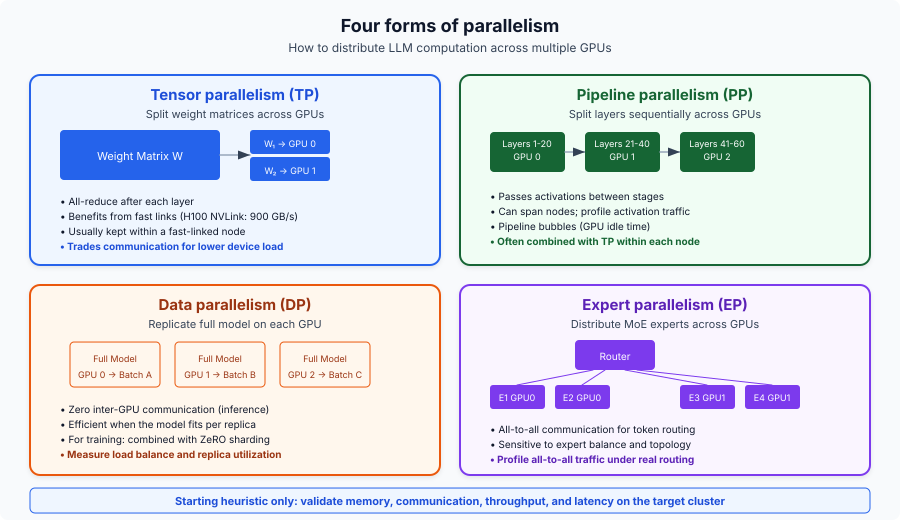
Tensor Parallelism (TP) splits individual weight matrices across GPUs and needs an all-reduce after each layer. It needs NVLink bandwidth (900 GB/s on H100) and works best within a single node. TP=2 or TP=4 is typical; going higher hits diminishing returns from communication overhead. For inference, TP reduces per-request latency by splitting compute.
Pipeline Parallelism (PP) splits layers sequentially across GPUs, passing activations between stages. The lower bandwidth requirements make it workable across nodes via InfiniBand, but it introduces pipeline bubbles (GPU idle time). A common pattern: Llama-405B uses TP=8 within nodes and PP=2 across nodes.
Data Parallelism (DP) replicates the full model on each GPU. For inference, this is the most cost-effective scaling strategy: each replica handles independent requests with zero inter-GPU communication. For training, it is the primary scaling axis, combined with ZeRO to shard optimizer states.
Expert Parallelism (EP) distributes MoE experts across GPUs using all-to-all communication for token routing. DeepSeek-V3 (671B total, 37B active, 256 experts) typically deploys with EP=8 per node. The all-to-all communication accounts for ~47% of forward-pass latency even on NVLink, which makes it the main MoE bottleneck.
The parallelism decision framework:
- Model fits on 1 GPU: use DP only.
- Model fits on 1 node: use TP within the node + DP across nodes.
- Model exceeds 1 node: use TP + PP + DP.
- Mixture of Experts: add EP to any of the above.
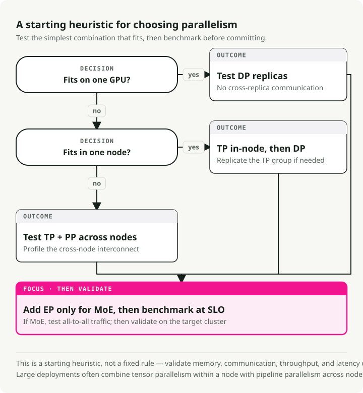
34. Serving Frameworks Compared
vLLM is the most widely adopted open-source framework, built on PagedAttention and continuous batching. It has the broadest model support, an OpenAI-compatible API, and supports TP/PP/DP/EP. It is a PyTorch Foundation project with the largest community.
SGLang matches or exceeds vLLM in many scenarios (up to 3.1x throughput on Llama-70B) through RadixAttention for prefix reuse, a zero-overhead CPU scheduler, and native structured generation. It was the first open-source framework to match DeepSeek's official inference throughput at scale on 96 H100s.
TensorRT-LLM has the best single-request latency (35–50 ms TTFT) through CUDA graph fusion and kernel optimization, with native FP8/FP4 support. The tradeoff is a steeper learning curve, Docker dependency, and NVIDIA lock-in.
TGI (HuggingFace) integrates well with the HuggingFace ecosystem and supports multiple backends (NVIDIA, AMD, Intel). As of early 2025, HuggingFace has placed TGI in maintenance mode.
Ollama is for developers who want local LLM access in two commands. Not optimized for production throughput.
llama.cpp is the portable C/C++ option with the broadest hardware support (ARM, AVX, Metal, CUDA, ROCm, Vulkan). The GGUF format supports 1.5-bit through 8-bit quantization. CPU inference delivers 3–45 tokens/s; GPU (RTX 4090) reaches ~128 tokens/s on Llama 8B Q4_K_M.
35. GPU Selection for Inference
GPU pricing and availability as of March 2026:
| GPU | Memory | Bandwidth | Native Precision | TF32 TFLOPS | NVLink | Cloud $/hr |
|---|---|---|---|---|---|---|
| B200 | 192 GB HBM3e | 8 TB/s | FP4, FP8, INT8 | ~4,500 (FP8) | 5.0 (1.8 TB/s) | ~$6.25 |
| H200 | 141 GB HBM3e | 4.8 TB/s | FP8, INT8 | 989 | 4.0 (900 GB/s) | $2.15-6.00 |
| H100 SXM | 80 GB HBM3 | 3.35 TB/s | FP8, INT8 | 989 | 4.0 (900 GB/s) | $1.49-3.90 |
| A100 SXM | 80 GB HBM2e | 2.0 TB/s | INT8, FP16 | 312 | 3.0 (600 GB/s) | $1.10-2.54 |
| L40S | 48 GB GDDR6 | 864 GB/s | FP8, INT8 | 362 (FP16) | None | $0.80-1.50 |
| A10G | 24 GB GDDR6 | 600 GB/s | INT8, FP16 | 70 | None | $1.00-1.50 |
| RTX 4090 | 24 GB GDDR6X | 1.0 TB/s | FP8, INT8 | 83 (FP32) | None | ~$0.35/hr |
H200 is the current sweet spot for large models. Its 141 GB of memory fits Llama 70B on a single GPU (which used to require 2x H100), and 4.8 TB/s bandwidth gives up to 2x faster inference than H100 on Llama 2 70B. B200 is a generational step up: native FP4 support, 192 GB HBM3e, and NVLink 5.0 at 1.8 TB/s. The A10G is heavily used in cloud environments (like AWS G5) for serving 7B–8B parameter models because of its cost-to-performance ratio. The RTX 4090 remains the consumer king at ~$1,600 MSRP.
Native hardware quantization support has a big influence on performance. AWQ and GPTQ (with INT4 weights) can run efficiently on any architecture by dequantizing into FP16 registers, but true native acceleration through Tensor Cores depends on the generation. Hopper (H100/H200) and Ada (L40S/4090) natively accelerate FP8, and Blackwell (B200) adds native FP4 Tensor Cores for large throughput gains. All listed GPUs support INT8 matrix operations.
LLM decode is memory-bandwidth-bound, so bandwidth matters more than raw TFLOPS for most serving workloads. That is why H200 outperforms H100 even though the compute architecture is identical.
36. Model Cascading and Routing
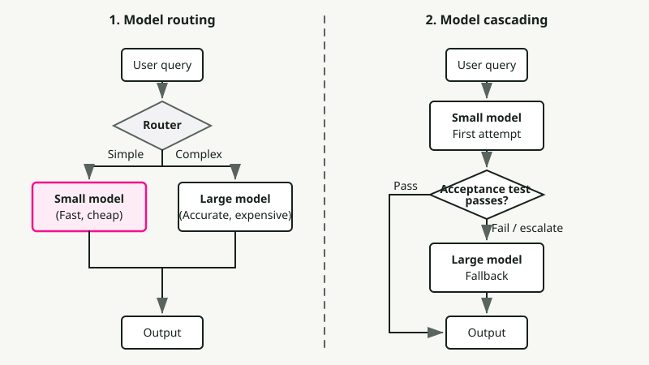
Model routing picks which LLM handles each query based on predicted complexity. RouteLLM (LMSYS/UC Berkeley, ICLR 2025) uses matrix factorization routers trained on Chatbot Arena preference data to hit 85% cost reduction on MT-Bench while keeping 95% of GPT-4 quality. The economics still hold up: a frontier model like GPT-4o costs ~$5.00/M tokens (blended) versus a fast open model like Llama 3 8B at ~$0.05/M, a roughly 100x gap that makes even imperfect routing worth doing.
Router architectures range from lightweight BERT classifiers (~1–5 ms overhead) to LLM-based judges. Cascading is the sequential variant: a query runs through a chain of models, starting with the fastest and cheapest. If a scoring function decides the generation is not good enough, it escalates to the next, more expensive model. FrugalGPT showed that this kind of sequential fallback can cut inference costs by up to 98% while matching the best individual LLM's performance, or boost accuracy by up to 4% at the same cost. The point is that expensive frontier models only get used for the hard tail of queries that actually need them.
Part VII — Applications
Application-level patterns that turn raw model capabilities into useful systems. Embeddings power retrieval, RAG grounds responses in external knowledge, agents orchestrate multi-step workflows, and prompt engineering ties it all together.
37. Embedding Models vs Generative Models
Embedding models encode text into fixed-dimensional vectors that capture semantic meaning. Unlike generative decoder models that produce token sequences, they output a single dense vector (768–4,096 dimensions) for the entire input. Most embedding models use encoder-only transformers (bidirectional attention) rather than decoders. The encoder processes all input tokens at once and produces a contextualized representation for each token. A pooling layer then collapses those per-token representations into a single vector, typically mean pooling (averaging all token embeddings) or CLS pooling (using a special classification token's output). The model is then fine-tuned with contrastive learning: semantically similar texts are pushed closer together in vector space and dissimilar texts are pushed apart.
Top embedding models (2025-2026):
| Model | Dimensions | Architecture | MTEB Score |
|---|---|---|---|
| Qwen3-Embedding-8B | up to 4,096 | Decoder-based (Qwen3) | 70.6% |
| Gemini Embedding 2 | 3,072 | Multimodal (text/image/video/audio) | 68.2% |
| pplx-embed-v1-4B | 2,560 | Decoder-based (Qwen3), native INT8/binary | 69.7% |
| Voyage-3-large | 2,048 | Proprietary | 66.8% |
| OpenAI text-embedding-3-large | 3,072 | Proprietary | 64.6% |
A few trends in the 2025–2026 generation. Top models now use decoder-only backbones (Qwen3, Mistral) with bidirectional attention and pooling layers on top, which breaks the old encoder-only assumption. Perplexity's pplx-embed introduced native quantized embeddings: INT8 (4x storage reduction) and binary (32x reduction) produced directly during inference, with no post-hoc quantization loss. Google's Gemini Embedding 2 is the first natively multimodal embedding model, mapping text, images, video, and audio into a single unified vector space.
Matryoshka Representation Learning (MRL, Kusupati et al., NeurIPS 2022) is the technique that makes embedding dimensions flexible. Named after Russian nesting dolls, MRL structures an embedding so that its first \(m\) dimensions are as informative as an independently trained \(m\)-dimensional model. During training, instead of computing a single loss on the full embedding, MRL computes multiple losses in parallel at logarithmically spaced dimensions (64, 128, 256, 512, 1024, 2048, 3072). All losses are aggregated and backpropagated together, which forces the model to pack the most important semantic information into the leading dimensions, with each subsequent group of dimensions adding finer detail. Coarse to fine, like nested dolls.
After training, you can truncate the embedding to any of these trained dimensions by taking a prefix of the vector. The practical impact is large: OpenAI's text-embedding-3-large truncated to just 256 dimensions outperforms the older text-embedding-ada-002 at its full 1,536 dimensions on MTEB. A 6x reduction in vector size with better quality, which translates to 6x less storage, 6x faster similarity search, and 6x lower vector database costs without retraining the model.
The embedding model is the most important component choice in a RAG pipeline. It determines retrieval quality, which sets the ceiling for generation quality. A poor embedding model cannot be compensated for by a better LLM.
38. RAG Architecture in Production
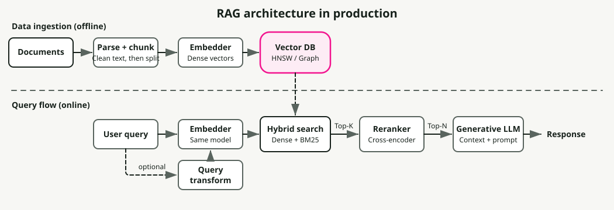
Retrieval-Augmented Generation grounds LLM responses in external knowledge by retrieving relevant documents at query time and injecting them into the prompt context. It addresses the core limitation of parametric-only models: their knowledge is frozen at training time, and they hallucinate when asked about information not in their weights. A production RAG system is a multi-stage pipeline, and each stage moves the dial on final answer quality.
The ingestion pipeline runs offline. Raw documents (PDFs, HTML, Markdown, databases) are first parsed into clean text, which is harder than it sounds: PDF parsing alone can lose tables, headers, and formatting. The text is then split into chunks, which are embedded and indexed independently.
Chunking strategy has an outsized effect on retrieval quality. Too small (under ~100 tokens) and chunks lose context; too large (over ~512 tokens) and they dilute relevance with off-topic content. Common approaches are fixed-size with overlap (256 tokens with 10–15% overlap — simple and effective), recursive character splitting (splits by paragraph, then sentence, then word — respects natural boundaries), and semantic chunking (groups sentences by embedding similarity — highest quality but slower).
Each chunk is then embedded with a model like those in Section 37 and stored in a vector database (Pinecone, Weaviate, Qdrant, pgvector, and so on).
The retrieval pipeline runs at query time. Naive RAG (embed the query, run a single vector search, stuff results into the prompt) usually does not get you the accuracy you want in enterprise settings. Production-grade RAG layers more stages on top to close the gap:
- Hybrid search combines dense vector retrieval (semantic similarity) with sparse retrieval like BM25 (exact keyword matching), merged via Reciprocal Rank Fusion (RRF). Dense search is good at semantic paraphrases ("cost of living" matches "expenses"), and sparse search catches exact terms that embeddings miss (product IDs, error codes, acronyms). Hybrid search gives a 15–30% accuracy improvement over pure vector search (Redis/Azure Benchmarks, 2024).
- Reranking passes the top-\(k\) retrieved chunks (typically 20–50) through a cross-encoder model that jointly scores query-document relevance more accurately than the initial retrieval's bi-encoder cosine similarity. The cross-encoder sees the full query and document together, which enables fine-grained semantic matching. Reranking adds another 23.4% improvement over hybrid search alone (Redis/Azure Benchmarks, 2024), at the cost of 50–200 ms additional latency. The reranked top-\(n\) results (3–10) are then injected into the LLM prompt. I covered the full multi-stage search pipeline (BM25, cross-encoder reranking, LLM-powered relevance) in Building a Modern Search Ranking Stack.
- Query transformation rewrites the user's query before retrieval to improve recall. HyDE (Hypothetical Document Embeddings) has the LLM generate a hypothetical answer, which is then embedded and used for retrieval. Multi-query expansion generates multiple phrasings of the same question. Step-back prompting asks a more general question first to pull in broader context.
The common failure modes:
- Retrieval failure — the correct document exists but is not retrieved. Fix with better chunking, hybrid search, or metadata filtering.
- Context poisoning — irrelevant retrieved chunks mislead the LLM. Fix with reranking and stricter top-\(k\) cutoffs.
- Lost-in-the-middle — the LLM ignores relevant context placed in the middle of a long prompt (Liu et al., 2024 showed models attend most to the beginning and end of the context window).
GraphRAG (Microsoft, 2024) augments vector search with knowledge graph traversal. During indexing, an LLM extracts entities and relationships from documents and builds a graph that captures multi-hop connections invisible to flat vector search. At query time, GraphRAG traverses this graph for relationship-heavy queries like "which suppliers are connected to both companies?" where standard RAG fails. The cost is much higher indexing compute and storage.
Typical end-to-end latency breakdown: embedding 5–20 ms, vector search 10–100 ms, reranking 50–200 ms, LLM generation 200–2,000 ms (Milvus RAG Optimization Guide, AIMultiple Reranker Benchmarks, 2026). The retrieval stages add only ~100–300 ms of overhead, which is modest compared to generation, but their impact on answer quality is large: it is the difference between a hallucinated answer and a grounded one.
39. Agent Architectures and Tool Calling
LLM agents use models as reasoning engines that plan, invoke tools, observe results, and iterate. The architecture choice (how the agent reasons and when it acts) determines cost, latency, and reliability. Three reasoning patterns cover most production systems:
- ReAct — Thought → Action → Observation loops. Adapts in real time as each observation updates reasoning, but history accumulates and has to be re-processed every step, which makes it the most expensive pattern.
- ReWOO — Plans all tool calls upfront in a single LLM pass using placeholders (
#E1,#E2), executes them (potentially in parallel), and synthesizes. Up to 5x token savings over ReAct, but "blind" during execution: it cannot recover if an early tool fails. - Plan-and-Execute — A planner generates a multi-step plan; an executor runs each step with the ability to re-plan on failure. Allows model specialization (strong model plans, cheap model executes). Best success rates on complex tasks.
| Pattern | Token Cost | Adaptability | Best For |
|---|---|---|---|
| ReAct | High | Excellent — pivots in real time | Exploratory tasks, debugging, chat |
| ReWOO | Low (~5x savings) | Poor — blind during execution | Predictable pipelines, dashboards |
| Plan-and-Execute | Medium | Good — re-plans on failure | Complex analysis, research tasks |
Function calling is the mechanism agents use to invoke tools. Native function calling (supported by GPT-4o, Claude, Gemini, Llama 3.1+) outputs structured JSON tool invocations validated against a provided schema, with much lower error rates than text-based parsing. The model sees tool definitions as part of its context and learns to emit well-formed calls. Parallel function calling (multiple tools in a single response) reduces round trips for independent operations.
Structured output and constrained decoding guarantee schema conformance by modifying token generation itself. Engines like xgrammar (used in vLLM and SGLang) apply grammar masks at each decoding step and produce 100% valid JSON with near-zero overhead. Schema-Guided Reasoning (SGR) takes this further: because LLMs generate fields sequentially, placing analysis fields before decision fields in the schema forces the model to reason before deciding. Three SGR patterns cover most production use cases: Cascade (sequential steps), Routing (Union types as semantic switches), and Cycle (bounded lists).
Production gotchas: tool selection degrades past ~15–20 available tools, multi-step agents take 5–30+ seconds, and complex workflows cost 10–50x more tokens than single-prompt solutions. The 2024–2025 trend is hybrid approaches: ReAct reasoning with native function calling, orchestrated by frameworks like LangGraph.
40. Prompt Engineering for Production
Production prompt engineering is less about clever tricks and more about systematic reliability. The techniques below are ordered by impact. The first two alone solve most production issues.
Few-shot examples are the single most reliable way to control output format. 3–5 diverse examples that cover edge cases (empty inputs, ambiguous queries, multi-part answers) dramatically improve format compliance and reduce the need for post-processing. Diversity is what matters: examples should span the distribution of real inputs, not just the happy path. Diminishing returns set in past 5 examples, and each example consumes context tokens, so quality beats quantity.
Chain-of-thought (CoT) prompting asks the model to reason step by step before answering. Even the simple suffix "Let's think step by step" significantly boosts accuracy on math, logic, and multi-step reasoning (Kojima et al., 2022). For production, few-shot CoT (examples that include the reasoning steps, not just the final answer) is more reliable than zero-shot. Self-consistency (Wang et al., 2023) generates multiple CoT paths (temperature 0.5–0.7) and takes the majority vote, which reduces random errors at the cost of extra inference calls.
Structured output with explicit JSON schemas (Section 39) removes an entire class of parsing failures. Combined with constrained decoding engines like xgrammar, you get 100% valid output with near-zero overhead. No regex parsing, no retry loops.
Prompt chaining breaks complex tasks into a pipeline of focused steps: classify intent → retrieve context → generate response → validate output. Each step is a simple, testable prompt with a single objective. This consistently beats "mega-prompts" that try to handle everything in one call, because each stage can use a different model (cheap classifier, expensive generator), failures are localized and debuggable, and intermediate outputs can be cached and reused. The tradeoff is added latency from sequential LLM calls, so use chaining for quality-critical flows.
Temperature controls randomness in token sampling. Use 0.0–0.2 for deterministic tasks (classification, extraction, code generation) where consistency matters. Use 0.7–1.0 for creative tasks (writing, brainstorming) where you want diversity. Avoid temperatures above 1.0 in production; outputs become incoherent. Temperature also interacts with top_p and top_k in non-obvious ways; in most production systems, setting temperature and leaving top_p at 1.0 is enough.
System vs user message separation matters more than most teams realize. System messages set persistent behavior ("You are a medical coding assistant. Always cite ICD-10 codes."), and user messages carry per-request content. Models attend to system messages differently: they set the behavioral frame rather than contributing to the conversation content. Put hard constraints ("NEVER include patient names in output") in the system message, because models are more consistent at avoiding specific patterns than at following general positive instructions.
The big shift in 2024–2025 has been from "prompt engineering" to context engineering: the focus has moved from crafting clever instructions to dynamically assembling the right information (retrieved documents, tool results, conversation history, few-shot examples) in the right format at the right position in the context window. Models attend most strongly to the beginning and end of their context, so placing critical instructions and the most relevant retrieved content at those positions yields measurable quality improvements. I covered this shift in Context Engineering for AI Agents.
Part VIII — Production Operations
The operational concerns that decide whether your system survives contact with real traffic: rate limiting, failure modes, monitoring, cost optimization, and capacity planning.
41. Rate Limiting for Variable-Cost Requests
Traditional requests-per-second rate limiting assumes roughly equal cost per request. LLMs break that assumption. A 10-token classification prompt and a 100K-token document analysis hit the same API endpoint but differ in cost by four orders of magnitude. Rate-limiting by RPS either lets expensive requests through unchecked or starves cheap requests unnecessarily.
Production systems need token-based rate limiting across multiple dimensions. OpenAI enforces RPM (requests per minute) and TPM (tokens per minute) with tiered limits: GPT-5 Tier 1 starts at 500K TPM, scaling to 4M TPM at Tier 4. Anthropic is more granular, with separate ITPM (input tokens per minute) and OTPM (output tokens per minute) limits, which reflects the fact that output tokens cost 3–5x more to generate than input tokens cost to process. Both use the token bucket algorithm, continuously replenishing capacity rather than resetting at fixed intervals.
The practical implementation pattern is a multi-dimensional limit hierarchy (user → application → organization → global), with priority tiers for premium access. At the request level, the technique that matters is token budget reservation: estimate total tokens (input + max_tokens) at admission time, deduct from the bucket, then adjust when the request completes with actual usage. That prevents a burst of long-generation requests from exhausting capacity before they even start producing output.
For self-hosted deployments, the equivalent is provisioned throughput: reserving dedicated GPU capacity for guaranteed token rates. Anthropic and Amazon Bedrock offer this as a product; for vLLM deployments, it means configuring admission control based on active decode slots and KV cache pressure rather than simple request counts. The point goes back to Section 5: throughput is measured in tokens, not requests, so rate limiting has to be too.
42. Failure Modes to Design Against
LLM serving fails in ways traditional web services do not. Knowing these failure modes (and designing defenses before they hit production) is what separates reliable systems from impressive demos.
Out-of-Memory (OOM) is the most common failure. A 70B FP16 model needs ~140 GB for weights alone, and KV cache for a single 128K-context sequence adds ~40 GB (Section 6). The gap between "fits in memory" and "OOM under load" is smaller than it looks: a batch of 8 long-context requests can take more memory for KV cache than the model weights. Prevention starts with vLLM's gpu_memory_utilization parameter (default 0.9; conservative deployments use 0.85–0.90) combined with quantization and PagedAttention. For workloads with high KV cache pressure, LMCache offloads KV cache to CPU memory or disk and gets 3–10x latency reduction by expanding effective cache capacity past GPU memory limits.
Preemption happens when KV cache space runs out and the scheduler has to evict active requests to make room for new ones. In vLLM, preempted requests are recomputed from scratch rather than swapped to CPU (recomputation is faster for most practical sequence lengths). From the user's side, this means their in-flight request silently restarts: TTFT looks normal, but end-to-end latency doubles or triples. Watch preemption counts closely. Rising preemption rates mean you need more memory, shorter sequences, or more replicas.
Tail latency spikes when large prefills monopolize the GPU. A single 100K-token prefill can stall decode steps for every other request in the batch. Chunked prefill (Section 7) is the main defense, with a 54% P99 TBT reduction. Scheduling strategy matters too: the Learning-to-Rank scheduler (NeurIPS 2024) predicts relative output lengths and approximates shortest-job-first ordering, giving a 6.9x mean latency reduction over FCFS with less than 2% overhead. Length-aware scheduling systems like CascadeInfer push further by partitioning instances into length-specialized groups, reducing tail TTFT by 56–62%.
Cascading failures follow a predictable pattern. A slow request (large prefill or long generation) occupies a decode slot, queue depth grows, upstream clients hit timeouts, retries amplify load 2–3x, and the whole system degrades. The prevention hierarchy: admission control (reject requests when queue depth exceeds threshold) → per-request concurrency limits and max_tokens caps → circuit breakers at the gateway → disaggregated prefill/decode pools (Section 7) so that prefill-heavy requests cannot starve decoders.
43. Monitoring LLM Systems
LLM monitoring is different from traditional API monitoring in some basic ways. Every request has variable cost, two distinct phases with different bottlenecks, and a memory footprint that depends on both input length and generation length. Standard metrics like request latency and error rate miss most of what matters.
The metric most teams are not tracking is goodput: the number of requests per second that meet all SLO thresholds (TTFT, TPOT, total latency). The concept comes from Google Cloud's ML productivity measurement and has become the best single measure of system health. Raw throughput can look great while goodput collapses: a system processing 100 requests/second but violating TTFT SLOs on 40% of them has a goodput of 60, and 40% of your users are having a bad time. Optimizing for goodput forces you to care about the distribution of performance, not just the mean.
vLLM exposes a Prometheus endpoint at /metrics with metrics covering the serving lifecycle: vllm:num_requests_running and vllm:num_requests_waiting (queue pressure), vllm:kv_cache_usage_perc (fraction of KV cache blocks in use — above 90% predicts imminent preemption), generation length histograms, and prefix cache hit rates. The practical setup is simple: Prometheus scrapes /metrics (every 1–5 seconds), Grafana visualizes dashboards, and OpenTelemetry with Jaeger handles distributed tracing across multi-service LLM pipelines.
The alerts that matter, with the reason each threshold matters:
- Preemption count spikes — requests are being evicted and restarted; users experience silent latency doubling.
- KV cache utilization >90% — you are one batch of long-context requests away from preemption cascades.
- Queue depth exceeding 2–3x your batch size — admission control should start rejecting or deprioritizing.
- TTFT rising while TPOT stays flat — this divergence pattern means the problem is queuing or network, not GPU compute. The prefill and decode phases have independent bottlenecks (Section 4), so when only one metric moves you immediately know which subsystem to look at. This one diagnostic saves hours of debugging.
44. Cost Optimization: A Compounding Strategy
Current API pricing (as of March 2026) spans three orders of magnitude: GPT-4o at \(2.50/\)10.00 per million input/output tokens versus Gemini Flash-Lite at \(0.075/\)0.30. The trajectory is striking. GPT-4-equivalent performance costs $0.40/M tokens today versus $20 in late 2022, with costs declining roughly 10x per year. Even on this deflationary curve, the difference between naive and optimized deployment is 10–20x at any given price point.
Notice the asymmetry in every provider's pricing: output tokens cost 3–10x more than input tokens. GPT-4o charges $10/M output versus $2.50/M input (4x). Claude Sonnet 4 charges $15/M output versus $3/M input (5x). This is because output tokens require sequential decode steps (Section 7) while input tokens are processed in parallel. So optimizing output length (structured outputs, constrained generation, concise system prompts) has more leverage than optimizing input length.
The winning strategy stacks several approaches, and the effects compound multiplicatively:
- Quantization (FP16 → INT4) cuts serving memory 75%, which enables larger batches and 60–70% operational cost reduction (Section 9).
- Model routing sends 70% of traffic to cheaper models. One real case: monthly bill from $42K to $29K (Maxim AI Case Study, 2024) by matching request complexity to model capability (Section 36).
- Prompt caching saves up to 90% for workloads with shared prefixes. Anthropic charges 0.1x base price for cache reads, and cached tokens do not even count against ITPM rate limits (Section 16).
- Batch APIs offer 50% discounts for non-real-time work (evaluations, synthetic data generation, bulk classification).
- Self-hosting breaks even at roughly >2M tokens/day, but the breakeven analysis is treacherous. A $5K/month GPU budget easily becomes $25K once you add engineering time, infrastructure overhead, on-call burden, and sub-optimal utilization compared to providers who amortize across thousands of customers.
Stack these conservatively: quantization (0.3x) × routing (0.7x) × caching (0.5x) × batching (0.5x) = ~0.05x, a 95% reduction from the naive baseline. Not every workload qualifies for every optimization, but even partial stacking yields 5–10x savings.
The hidden cost that undermines the self-hosting math: ML engineering is 70–80% of total deployment cost, not compute (TrueFoundry / MLOps Reports, 2024). The GPU bill is the visible part of the iceberg.
45. Capacity Planning and Autoscaling
Capacity planning for LLM serving is different from traditional web services in three ways. Request costs vary by orders of magnitude (a 100-token request and a 100K-token request hit the same endpoint). Decode is a long-running sequential process, not a fast request-response cycle. And the binding constraint is memory, not compute. Get any of this wrong and you either pay for idle GPUs or drop requests under load.
The hard ceiling on concurrent requests is the KV cache memory budget, not FLOPS:
For a Llama 3 70B model in INT4 (~35 GB) on an 80 GB H100, roughly 40 GB remains for KV cache. With GQA and 4K average context, each sequence needs ~160 MB of KV cache, which works out to ~250 concurrent sequences. At 128K context, that drops to ~5 sequences per GPU. This is why GPU selection and KV cache optimization directly drive your capacity plan.
The capacity formula for fleet sizing:
The detail that matters is "at target SLO." A single H100 can push 2,000+ tokens/second if you do not care about latency, but only 400–800 tokens/second while maintaining P99 TTFT under 500 ms. Always benchmark at your actual SLO targets, not theoretical maximums.
Autoscaling signals need a rethink. GPU utilization is nearly useless as a scaling signal because it stays high even when the system is overloaded: the GPU is always busy, whether it is processing requests healthily or thrashing on preemptions. Better signals are queue depth (directly measures demand exceeding capacity), KV cache utilization (predicts preemption before it happens — scale up at 80%, not 95%), and goodput degradation (SLO violations are the ground truth that capacity is insufficient). These are the metrics from Section 43.
For development and staging environments, scale-to-zero is the right economics. GPU instances cost $2–4/hour; a staging environment running 24/7 costs $1,500–3,000/month for a single GPU. Serverless inference platforms and Kubernetes-based autoscalers (like KEDA with custom metrics) can spin instances down to zero during idle periods and cold-start in 30–60 seconds, which is fine for non-production use. The tradeoff is model loading time (30–60 seconds for a 70B model), which makes scale-to-zero impractical for production latency targets but cuts non-production GPU spend by 80–90%.
The Interconnected System
These 45 concepts are not a loose collection. They form a connected system. KV cache size determines batch size, batch size determines arithmetic intensity, arithmetic intensity controls whether decode is memory-bound, that drives TPOT, and TPOT defines throughput. GQA shrinks KV cache, which enables larger batches, which raises arithmetic intensity, which improves GPU utilization. FlashAttention exploits the SRAM-HBM bandwidth gap. Continuous batching solves compute utilization but creates memory fragmentation, which is what PagedAttention resolves. Chunked prefill co-schedules compute-bound and memory-bound work; the roofline model explains why this complementarity works.
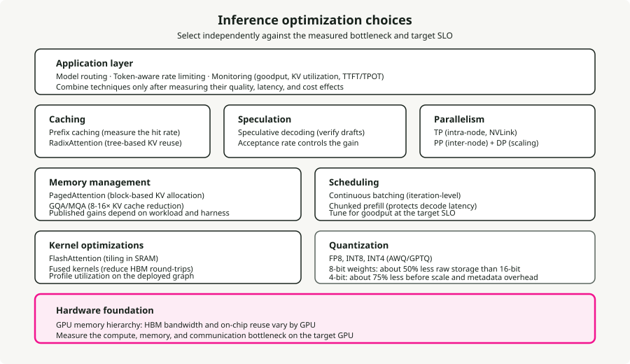
On the training side, the Chinchilla trap pushed the field from "train big" to "train small and long" (Llama 3 8B at 1,875 tokens per parameter). GRPO removed PPO's four-model memory burden, which is what made DeepSeek-R1's reasoning work feasible. Distillation from R1's chain-of-thought turned out to be more effective than applying RL directly to smaller models, and that reshaped how compact reasoning systems get built.
The meta-pattern: inference costs are falling roughly 10x per year while capabilities rise. Teams that treat inference optimization as a real engineering discipline (routing, caching, quantization, right-sized hardware) compound advantages in a market where the cost floor keeps dropping.
Key Principles
- LLM inference has two distinct phases. Prefill is compute-bound, decode is memory-bandwidth-bound. Every optimization targets one or both.
- The KV cache is the central bottleneck. Its size determines batch capacity, memory pressure, and ultimately throughput. GQA, PagedAttention, and quantization all attack it.
- The GPU memory hierarchy drives everything. The 10x bandwidth gap between SRAM and HBM explains FlashAttention, kernel fusion, and why decode is memory-bound.
- Continuous batching + PagedAttention together give 23x throughput over naive serving. Non-negotiable for production.
- Chinchilla-optimal is not inference-optimal. The field has moved to massive overtraining of smaller models (1,875 tokens/parameter for Llama 3 8B).
- GRPO and distillation reshaped alignment. DeepSeek-R1 showed that GRPO + verifiable rewards + distillation beats applying RL directly to smaller models.
- Cost optimization compounds. Stacking quantization, routing, caching, and batch APIs gets you 5–10x cost reduction versus naive deployment.
- Bandwidth matters more than TFLOPS for serving. H200 outperforms H100 with identical compute, purely from memory bandwidth.
Further Reading
Related deep-dives from this blog, organized by topic:
- LLM Fine-Tuning Guide — when to fine-tune vs. RAG vs. prompt engineering
- Open-Source LLM Variants and File Formats — matching model variants and quantized formats to hardware
- LoRAX Serving Guide — serving thousands of LoRA adapters in production
- Scaling Large Language Models — multi-GPU and multi-node strategies
- Local LLMs on macOS — hands-on setup with llama.cpp and Ollama
- AI Agent Reasoning Loops in 2026 — deep dive into ReAct, ReWOO, and Plan-and-Execute
- AI Agent Memory Architecture in 2026 — checkpoints, vector stores, and document memory for stateful agents
Key Takeaways
- LLM engineering is systems engineering plus ML. GPU memory, batching, quantization, retrieval, and monitoring matter as much as model choice.
- Decode is usually memory-bound and prefill is usually compute-bound. That split explains why quantization, KV-cache design, batching, and hardware choice move latency differently.
- Serving architecture is a sequence of trade-offs: throughput, latency, cost, isolation, and operational complexity.
- Fine-tuning is not the first lever for most product systems. Use prompts, retrieval, routing, and evals first; fine-tune when behavior, format, latency, or cost makes it worthwhile.
- Production LLM work needs measurement at every layer: model quality, retrieval quality, latency, cost, drift, and failure modes.
References
Organized by topic area; section numbers in brackets where applicable.
Inference and Attention
- FlashAttention: Fast and Memory-Efficient Exact Attention with IO-Awareness - Dao et al., NeurIPS 2022
- FlashAttention-2: Faster Attention with Better Parallelism and Work Partitioning - Dao, 2023
- FlashAttention-3: Fast and Accurate Attention with Asynchrony and Low-precision - Shah et al., NeurIPS 2024
- Flash-Decoding for long-context inference - Dao et al., 2023
- Efficient Memory Management for Large Language Model Serving with PagedAttention - Kwon et al., SOSP 2023
- Orca: A Distributed Serving System for Transformer-Based Generative Models - Yu et al., OSDI 2022
- GQA: Training Generalized Multi-Query Attention - Ainslie et al., 2023
- Triton: an intermediate language and compiler for neural network computations - Tillet et al., MAPL 2019
- FlashNorm: Fast Normalization for LLMs - 2024
- Deep Kernel Fusion for Transformers - DeepFusionKernel, 2026
Speculative Decoding
- EAGLE-3: Scaling up Inference Acceleration of Large Language Models - Li et al., NeurIPS 2025
- Medusa: Simple LLM Inference Acceleration Framework with Multiple Decoding Heads - ICML 2024
Quantization
- AWQ: Activation-aware Weight Quantization for LLM Compression and Acceleration - MLSys 2024 Best Paper
- GPTQ: Accurate Post-Training Quantization for Generative Pre-trained Transformers - Frantar et al., ICLR 2023
- Marlin: Mixed-Precision (FP16xINT4) LLM Inference Kernel - Frantar et al., 2024
Training and Fine-Tuning
- LoRA: Low-Rank Adaptation of Large Language Models - Hu et al., ICLR 2022
- QLoRA: Efficient Finetuning of Quantized LLMs - Dettmers et al., NeurIPS 2023
- ZeRO: Memory Optimizations Toward Training Trillion Parameter Models - Rajbhandari et al., SC20
- ZeRO-Infinity: Breaking the GPU Memory Wall for Extreme Scale Deep Learning - Rajbhandari et al., 2021
- Self-Instruct: Aligning Language Models with Self-Generated Instructions - Wang et al., ACL 2023
- WizardLM: Empowering Large Language Models to Follow Complex Instructions - Xu et al., ICLR 2024
- Phi-4 Technical Report - Microsoft, 2024
- AI models collapse when trained on recursively generated data - Shumailov et al., Nature 2024
Alignment
- Direct Preference Optimization: Your Language Model is Secretly a Reward Model - Rafailov et al., NeurIPS 2023
- DeepSeekMath: Pushing the Limits of Mathematical Reasoning in Open Language Models - Introduced GRPO
- DeepSeek-R1: Incentivizing Reasoning Capability in LLMs via Reinforcement Learning - DeepSeek, 2025
Scaling and Architecture
- The Llama 3 Herd of Models - Meta, 2024
- LLaMA: Open and Efficient Foundation Language Models - Touvron et al. (Meta), 2023
- Llama 2: Open Foundation and Fine-Tuned Chat Models - Touvron et al. (Meta), 2023
- Qwen3 Technical Report - Qwen Team (Alibaba), 2025
- Training Compute-Optimal Large Language Models - Hoffmann et al. (Chinchilla), NeurIPS 2022
- RoFormer: Enhanced Transformer with Rotary Position Embedding - Su et al., 2021
- YaRN: Efficient Context Window Extension of Large Language Models - Peng et al., ICLR 2024
- SGLang: Efficient Execution of Structured Language Model Programs - Zheng et al., NeurIPS 2024
- Mixtral of Experts - Jiang et al. (Mistral AI), 2024
Embeddings
- Matryoshka Representation Learning - Kusupati et al., NeurIPS 2022
- pplx-embed-v1: Diffusion-Pretrained Dense and Contextual Embeddings - Perplexity AI, 2026
Agent Architectures
- ReAct: Synergizing Reasoning and Acting in Language Models - Yao et al., ICLR 2023
- ReWOO: Decoupling Reasoning from Observations for Efficient Augmented Language Models - Xu et al., 2023
- Plan-and-Solve Prompting: Improving Zero-Shot Chain-of-Thought Reasoning by Large Language Models - Wang et al., ACL 2023
Routing
- RouteLLM: Learning to Route LLMs with Preference Data - Ong et al., ICLR 2025
Benchmarks
- MLPerf Inference v5.0 Results - MLCommons, April 2025
Serving Architectures
- SARATHI: Efficient LLM Inference by Piggybacking Decodes with Chunked Prefills - Agrawal et al., 2023 (Chunked Prefill)
- Splitwise: Efficient Generative LLM Inference Using Phase Splitting - Patel et al., ISCA 2024 (Disaggregated Serving)
- DistServe: Disaggregating Prefill and Decoding for Goodput-optimized Large Language Model Serving - Zhong et al., OSDI 2024 (Disaggregated Serving)
Serving Frameworks
- vLLM - PagedAttention-based serving engine
- SGLang - RadixAttention and structured generation
- TensorRT-LLM - NVIDIA optimized inference
- llama.cpp - Portable C/C++ inference
- DeepSpeed - Microsoft distributed training library
- Ollama - Local LLM runner
Operations
- Efficient LLM Scheduling by Learning to Rank - Fu et al., NeurIPS 2024 (vLLM-LTR)
- CascadeInfer: Low-Latency and Load-Balanced LLM Serving via Length-Aware Scheduling - 2024
- Goodput metric as measure of ML productivity - Google Cloud, 2024
- vLLM Optimization and Tuning - vLLM Documentation
- vLLM Metrics - vLLM Documentation
- LMCache: KV Cache Management for LLM Serving - KV cache offloading
- OpenAI Rate Limits - OpenAI API Documentation
- Anthropic Rate Limits - Anthropic API Documentation